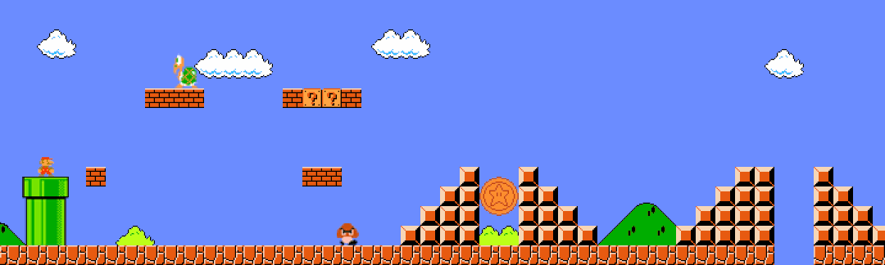

|
Resources
Here I want to share some excellent articles/interviews, which I really wish I saw in the early stage of my PhD study.

Doing a PhD
科研的开始——关于本科生科研的一些想法和建议
, by Prof. Zizhuo Wang,
see excerpt
"觉得一篇文章没有意义或者没有兴趣完全是根据自己的感受的，觉得意义不大并不是你的问题（每个人都有自己主观判断的权力），也不是作者的问题......而是说明这个文章和你不适合。"
"做研究只是未来很多条路里的一条，甚至是比较小众的一条，比起做研究，去把学到的知识在实际中应用可能是适合更多的人的道路，因此即使在最初的时候想去做研究而最后发现不是很适合也没什么关系，更不用一定要去坚持"
"看到最后应该......会有一种对自己能够写出类似的文章的希望——这是非常重要的......如果你觉得这样的文章是非常漂亮的非常精彩的，那么就说明你未来从事科研就会有极强的动力；反之，如果你如果感觉文章是枯燥的无聊的，那很难想象你未来能够说服自己把一生的事业放到这个上面。"
A Survival Guide to a PhD
, by Dr. Andrej Karpathy,
see excerpt
"My entire thesis is based on work I did in the last 1.5 years of my PhD. i.e. it took me quite a long time to wiggle around in the metaproblem space and find a problem that I felt very excited to work on."
"There’s a common misconception that the goal of your talk is to tell your audience about what you did in your paper. This is incorrect, and should only be a second or third degree design criterion. The goal of your talk is to 1) get the audience really excited about the problem you worked on (they must appreciate it or they will not care about your solution otherwise!) 2) teach the audience something (ideally while giving them a taste of your insight/solution; don’t be afraid to spend time on other’s related work), and 3) entertain (they will start checking their Facebook otherwise)."
“研”磨记——一名博士生的回忆录 (The Ph.D. Grind)
, by Prof. Philip J. Guo (中文版译者，王辰宇等),
see excerpt
"读博士有意思吗?我的答案是，读博经历中有的方面还是很有意思的......但是要知道，博士六年，这些有意思的事总共占去了我几百小时，而这些时间，只占我总共工作时间的不到百分之五。相比较，我花了一万小时在电脑前独自科研......做这些事，需要集中注意力，自律，注意细节，忍受痛苦；还有，渴望成功。所以，读博有意思吗......它间或趣味多多，更重要的是，它会给人带来满足感。趣味稍纵即逝，容易取得，但是，满足感，却只有在攻克了重要的，有意义的研究挑战后，才能收获。于我，攻读博士学位，已经成为了生命中最有成就感的经历之一。"
博士五年总结系列，
博士五年之后五年的总结：（前言） （其一）（其二）（其三）（终篇）
, by Dr. Yuandong Tian,
see excerpt
"读什么东西，就成为什么样的人......人是很容易被周围的东西影响的，在现在这个手机时代尤其如此，你关注谁，就会成为相似的人。刷一刷各类新闻和朋友圈，几十分钟就很容易过去了。而且这些东西大多可以定制，所以你的命运，可能完全取决于你，也可能完全交给你周围的人，不可不察。"
"道心当立。当在喧嚣的酒席过后，走出大门，俗事散尽之时，仰望星空之际，还能在自然的静谧中，记得自己是谁，为何而来，去往何方——即便向着众人不看好不推荐的方向，也能够走得坚定潇洒。失去这个则会迷茫，纵然有千般奇技，也不知要向何方施展，再被一些表面事情带着走，转眼就迷失掉几年光阴。"
机器学习科研的十年
, by Prof. Tianqi Chen,
see excerpt
"现在看来，当时的我犯了一个非常明显的错误 -- 常见的科学研究要么是问题驱动，比如“如何解决ImageNet分类问题”；要么是方法驱动，如 “RBM可以用来干什么”。当时的我同时锁死了要解决的问题和用来解决问题的方案，成功的可能性自然不高。"
"用李沐之前说过的一句话概括，保证每一篇论文的质量接近单调提升，已经是一件难以做到但是又值得最求的事情。"
"选择做什么眼光和做出好结果的能力一样重要，眼界决定了工作影响力的上界，能力决定了到底是否到达那个上界。交大时敖平老师曾经和我说过，一个人做一件简单的事情和困难的事情其实是要花费一样多的时间。因为即使再简单的问题也有很多琐碎的地方。"
"现在看来，很多困难和无助都是随机的涨落的一部分，付出足够多的时间和耐心，随机过程总会收敛到和付出相对的稳态。"
Interviews
方飞：AI 可以向善，博弈论+机器学习可以用于防止犯罪
, interview between AiTechTalk and Prof. Fei Fang,
see excerpt
"'首先，他是真的关心实际问题。他会非常积极地与不同政府组织和非政府组织的人进行交流，向他们介绍我们团队的研究，AI研究可能以怎样的方式帮助他们，或者询问他们在工作当中遇到哪些困难需要解决，看看有哪些方面可以合作。他的积极态度深深地影响了我。另一方面，他经常跟我们说，安全博弈的研究要从实际问题中出发。他非常鼓励我们从事有实际应用场景的研究。'"
陈丹琦：穿越多元文化，做独具特色的科研
, interview between IIIS and Prof. Danqi Chen,
see excerpt
"我开始思考，什么东西对我来说是我相信的且真正有用的。我想要找到能真正让我激动的问题，而不是为了去发论文，为了去追求一些论文数什么的而去做研究。所以第三年的时候就开始去想 reading comprehension 这个问题......我想说的点是找问题是最关键的，而且是要你自己去找，不是别人告诉你哪个问题重要。"
"这个世界变化是很快的，你也无法预测这个领域接下来怎么发展，所以要尽可能多学，尽可能拓宽知识面。还有就是格局的问题，格局可能就是要接触更多的人，更多的事，你才能了解什么是最顶尖最前沿的，这个能力需要慢慢发展。我建议大家要尽可能去各个地方实习，接触不同的人，去了解他们的工作，去了解别人的思维模式和他们所在领域最关心的问题。只有通过广泛的交流才能找到自己的位置。"
Concrete Skills: Time Management
我的时间管理之路：（1）定优先级，建立系统；
（2）把握节奏，融会贯通；
（3）排除干扰，专注工作；
（4）工欲善其事，必先利其器，
by my advisor Prof. Jianwei Huang,
see excerpt
"我们大脑的构造并不支持多任务并行。虽然我们可以同时写论文、回复邮件和朋友在线聊天，但是大脑只是在不同的任务之间快速的切换。由于注意力残存（attention residue）的关系，每次切换后前一个任务都会在后台占据我们的注意力一段时间。比如看15秒钟的电子邮件后马上切换，你的大脑对电子邮件的关注依然会保持一分钟。并行处理的任务越多，由于切换而浪费的时间越多。"
Concrete Skills: Publishing Papers at Top Conferences
顶会论文的经验分享与心路历程
, by Prof. Zheli Liu,
see excerpt
"顶会论文，实际代表的是一种研究的态度，但是，毕竟数量是少的，难度的是大的，而很多考核、研究生毕业要求，让我们失去了做顶级研究的耐心和条件，那么，就让我们在适合自己的环境下做一个相对卓越的工作吧。"
Concrete Skills: Presentations
The Art of Presentations (Video)
, by Prof. Baochun Li,
see excerpt
"Presenting is like filling water into a plastic bottle - don't pour too much too quickly!"
"Slow down... the one-way communication channel from you to the audience is lossy."
"For every single minute of presentation... you need at least 50 minutes to design the slides for that particular minute."
"You are the boss, not your slides... the best speakers attract all the attention from the audience."
Other Articles
我们发表论文是为了什么？
, by Prof. Jiaxing Huang,
see excerpt
"方法学越简单、越普适，能吸引很多人跳进来跟着你做，这绝对是一个好事；如果你没有教会读者什么，也没有让人从你的工作中受益，即使发了Science、Nature这样的明星期刊，那是不是也多为自娱自乐？"
|